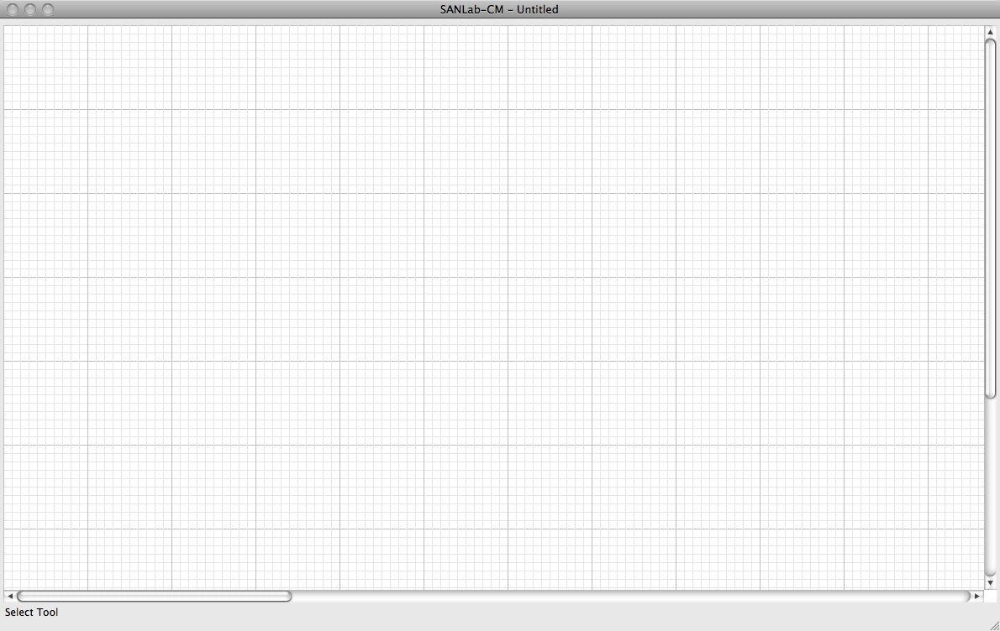
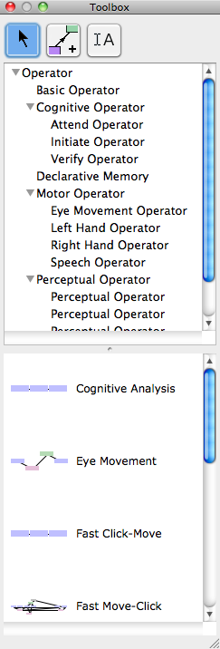
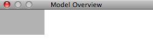

Chapter 1
The SANLab-CM Interface
The primary interface for SANLab-CM is composed of three different windows. The most important window is the Model Editor:
The Model Editor is where CPM-GOMS models are constructed. This is where activities and interactive routines are placed in order to create a task model. By convention, activities which happen earlier in a task should be placed to the left of those which occur later in the task (although this is not strictly enforced). Connections are then made to create "happens-before" dependencies on activities to build an overall structure. SANLab-CM requires that for each model, exactly one starting and one ending node are present. The graph must also be acyclical, since each activity represents time and cycles would indicate some form of time travel (!).
Next is the Toolbox. The Toolbox provides everything that is required to build a CPM-GOMS model in SANLab-CM. At the top of the Toolbox are the select and connect tools. The Toolbox also lists all of the activity types available to SANLab-CM and any interactive routines which have been defined. Chapter 2 will discuss how to extend SANLab-CM to use new activity types and interactive routines.
SANLab-CM provides a variety of built-in activity types which cover many facets of the Cognitive, Perceptual, and Motor processes which drive human cognition. Some of these activities are subtyped for convenience and categorization. For example, the Perceptual Operator type has specialized subtypes to represent visual and auditory perception. Similarly, motor operations are segmented to represent speech and the both hands. These activity types will be discussed further in the next section, Instantiating Activities.
Interactive Routines, sometimes referred to as templates, are a critical component of SANLab-CM. They allow modelers to quickly create copies of common sets of operations, and can be thought of as a CPM-GOMS implementation of terminal actions in a CMN-GOMS task analysis. Instantiating an interactive routine will be discussed in section 3.
Lastly, there is the Model Overview window. This window displays the entire model to scale. This provides the modeler with a "bird's-eye" view of the model and its overall structure. The gray rectangle represents the current position of the Model Editor's view and can be dragged to any location. One can also double-click on any point in the overview window and the editor will be snapped to center on that location. This makes it very easy to navigate to specific portions of the model for editing and examination purposes. The overview window also displays which activities are selected or are part of a critical path, making this information available at-a-glance for the entire model.